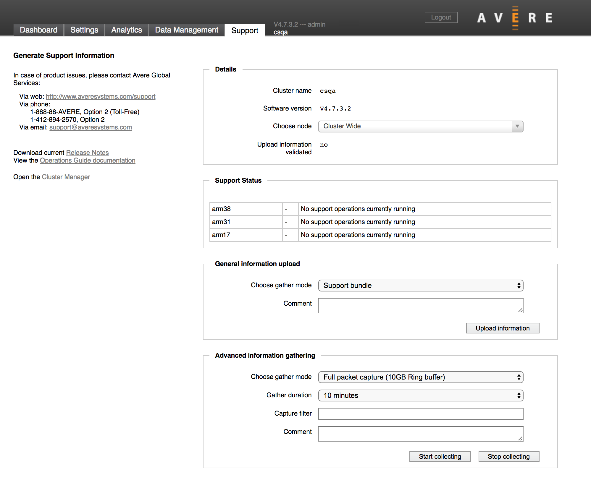

Using the Avere Control Panel Support Tab
The Avere Control Panel’s Support tab contains tools to help you work with Avere Global Services to investigate and fix problems that might occur with your Avere cluster.
In addition to providing Avere Global Services contact information and documentation links, the Support tab provides interfaces for uploading system information to Avere‘s technical support department to help Avere‘s support engineers assess your situation.
{kind=link}
To read product documentation, or to contact Avere Global Services for software support, use the contact information listed on the left side of the page.
The Support tab has controls for uploading cluster information to Avere Systems for use in identifying a possible problem. The tools and options are described in more detail in the sections below:
- Details
- Support Status
- General Information Upload
- Advanced Information Gathering
- Core Dump Management
The behavior of the Support tab also relies on the configuration settings in the Cluster > Support page (under the Settings tab of the Avere Control Panel). Use the settings page to turn on monitoring options that gather the information that can be uploaded from this page.
Note
The controls on this page should be used in conjunction with Avere Global Services. Follow their directions when using any of these features.
Details
The first section on the Support tab gives basic information about the cluster and allows you to change the scope of the information gathered and uploaded to Avere Systems for support purposes.
In the Choose Node selector, you can select a single node to examine, or Cluster Wide to investigate all nodes in the cluster. This selection affects the nodes that are shown in the Support Status table and also the scope of the information uploaded to Avere Systems.
- If you select a single node, only that node uploads troubleshooting information to Avere Global Services.
- If you select Cluster Wide, every node in the cluster uploads the information.
Note that you must select a node in order to upload core files. The Core dump management panel (described below) does not appear if Cluster Wide is selected.
The Upload information validated status message shows whether or not Avere Global Services has successfully received information from the cluster. If it reads “no”, check the Customer Information section of the Cluster > Support settings page to retry the upload or work around failures.
Support Status
The Support Status table shows the status of support information uploads for the selected node, or for all nodes in the cluster (if Cluster Wide is selected in Choose Node).
General Information Upload
Use the General Information Upload section to send system information about the node or cluster to Avere Global Services.
Note
The manual uploads available from this page supplement the automatic nightly uploads that you can configure on the Cluster > Support settings page.
If you select the Statistics Monitoring or General Information Upload checkboxes in the Customer Info section of the Cluster > Support settings page, Avere OS automatically uploads the selected data to Avere Global Services each night at approximately 1:00 a.m. local time.
To use the manual upload feature on the Support tab, follow these steps:
- Choose the type of information to upload with the Choose gather mode selector. Options are described in detail below.
- Optional: Type a note for the upload in the Comment text field.
- Click the Upload information button.
Selecting the Information To Upload
The “gather mode” setting lets you choose what information will be uploaded.
Note that collecting the information for these uploads is enabled or disabled on the Cluster > Support settings page. If you select statistics upload on the Support tab but you have not configured statistics monitoring on the Cluster > Support settings page, your upload will contain an empty statistics report. Use the Customer Information section of the Cluster > Support settings page to turn on information collection for the items you want to upload.
Gather mode options include the following:
Support bundle (default value) -
This option uploads the Normal support information package, plus the Current statistic information package.
Normal support information -
This option does an immediate manual upload of the General Information Upload data that can be set for nightly upload from the Cluster > Support settings page. Up to four days’ data is included in this upload.
Maximum support information -
This option uploads the same information in the Normal support information package, but does not restrict the uploaded data to the most recent four days.
Current statistic information -
Uploads statistics information collected since 1:00 a.m. (that is, since the regular nightly upload). Note that you must turn on statistics collection and nightly upload on the Cluster > Support settings page to populate this report.
Rolling trace information -
Uploads rolling trace information for a configurable time period. The default time value is ten minutes before and two minutes after the current date and time.
Rolling management trace information -
Uploads management trace information. You can configure the time period; the default value is ten minutes before and two minutes after the current date and time.
The following options should be used only when Avere Global Services advises you to do so:
- Historical statistic information
- Local directory information
- Data dump information
- Current trace information
- Retry active failed uploads
- Retry all failed uploads
- Remove failed uploads
Advanced Information Gathering
The Advanced information gathering panel can be used to collect additional information for uploading. In general, you should use this only when directed to do so by Avere Global Services, and with the settings they recommend.

This panel lets you to gather more specific data for a set period of time (or indefinitely, until stopped).
Types of information gathering available from this panel include:
Full packet capture -
Gathers a packet capture on all interfaces for the selected node, or cluster-wide
Full packet capture (10GB Ring buffer) -
Gathers a packet capture on all node or cluster interfaces as above, but without exceeding 10GB size
Performance information -
Provides detailed output on the performance of key system components
Memory Debugging -
Gives detailed information about memory usage
Stats gathering -
Collects cluster-wide or per-node statistics in 30-second iterations
Trace options -
- Trace
- Trace/partial packet
- Directory Trace
- Local Directory Trace
- Read/Write Trace
- Timing Trace
- Writeback Trace
Each of these options gathers program execution data according to the option selected.
Note
The trace options on this menu are disabled if Gather rolling trace data is enabled on the Cluster > Support settings page. That is, you can either capture rolling trace data for the cluster or capture the specific data in these options, but not both at the same time.
After choosing a gather mode, configure the time period for the data collection by selecting an option from the Gather Duration drop-down list:
- Until manually stopped - Data collection continues until you click the Stop collecting button.
- A number of minutes, ranging from 1 minute to 30 minutes
Most gather mode options have a default time of ten minutes.
Click the Start collecting button to begin data collection.
You can use the Stop collecting button to quit collecting data at any time.
Core Dump Management
Note
The Core Dump Management panel appears only if a single node is selected in the Details section.

Use the Core dump management panel if you need to upload a core file after a failure. You can also use this section to delete core files.
The Select core field automatically loads a list of core files on the node, if any exist. Use the drop-down selector to choose the file to upload or delete.
Optionally, you can add a text note for the upload in the Comment field.
To upload the core file to Avere Systems, click the Upload core button.
To delete the core file from the node, click the Remove core button.
Getting Help and Finding Documentation
The information in the left margin of the support page explains how to contact Avere Global Services by phone, web, or email.
It also includes links to documentation, such as the Release Notes for this version of the software, and the online Operations Guide. Additional documentation can be found at http://library.averesystems.com.
The Multi-Cluster Dashboard link opens a system viewer that allows you to monitor the health of multiple clusters on one page. Detailed documentation for this cluster manager is being developed.
{kind=link}
Support contact information on the Avere Control Panel Support tab